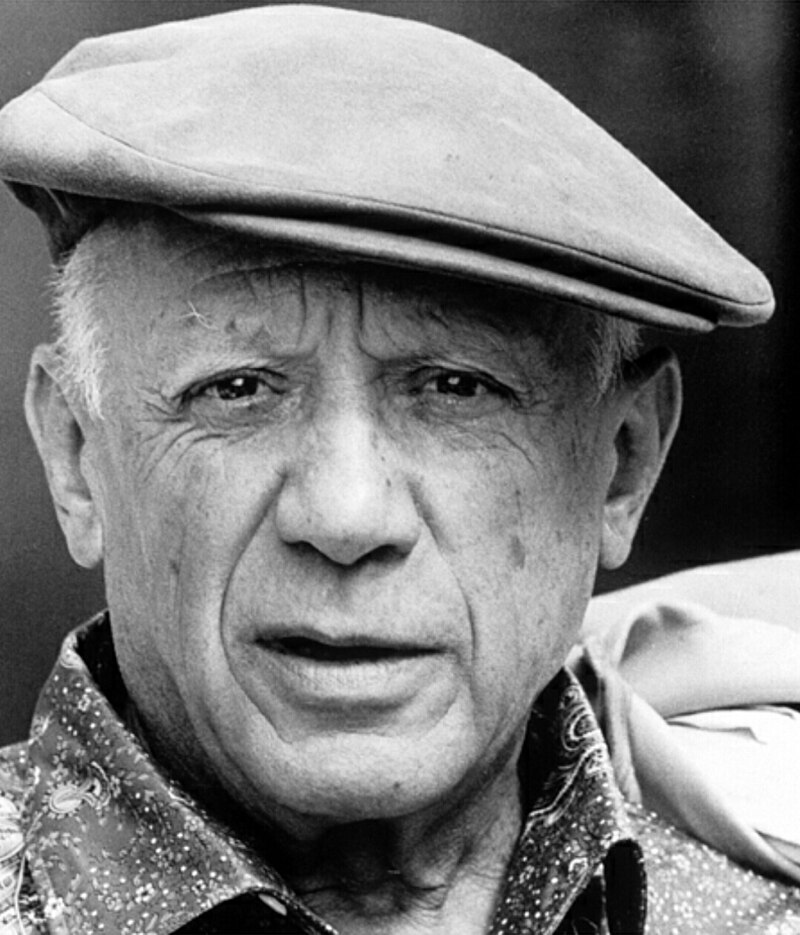
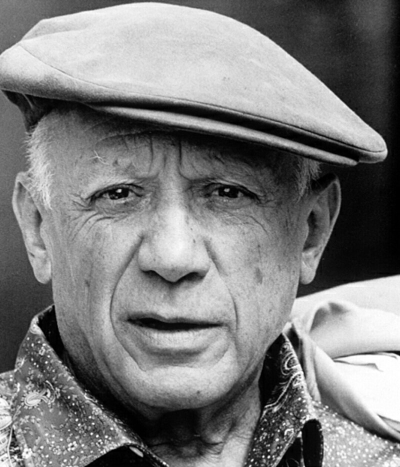
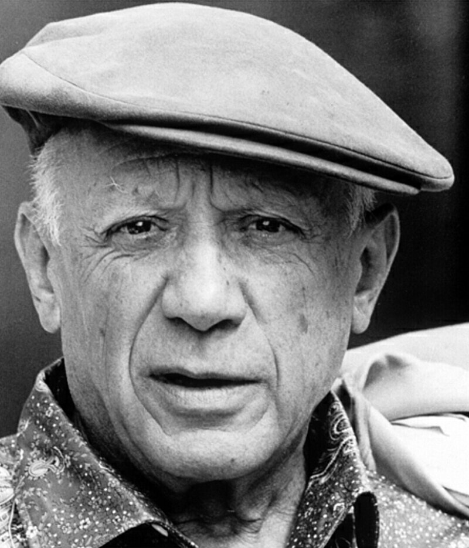
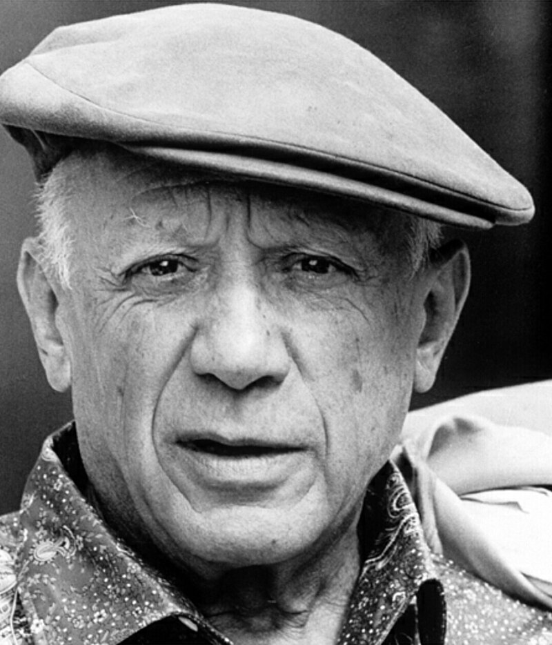

Autor: Pablo Picasso
Data: 1954
Técnica:Pintura a óleo
Dimensões: 116 x 88,56 centímetros
Localização: Coleção Particular
A tela "Jacqueline de mãos cruzadas" (1954), do pintor espanhol Pablo Ruiz Picasso, mais conhecido como Pablo Picasso (1881-1973) é uma pintura a óleo sobre tela (116x88), e encontra-se atualmente no Museu de Paris. A jovem Jacqueline Roque foi a segunda e última esposa de Picasso. Eles se conheceram em 1953 e casaram-se em em 1961, após o falecimento de Olga Koklova (1955), a primeira esposa do pintor. A pintura retrata a imagem enigmática de Jacqueline sentada no chão, em posição de esfinge, supostamente, em um ambiente doméstico com os dedos entrelaçados e os braços cruzados enlaçando os joelhos. Seu pescoço longo em forma de coluna (sinônimo de segurança e solidez), sustenta sua cabeça onde é possível identificar traços bem característicos: nariz longo e reto, olhar fixo e vigilante, rosto compenetrado, absolutamente alheia ao que acontece ao redor.